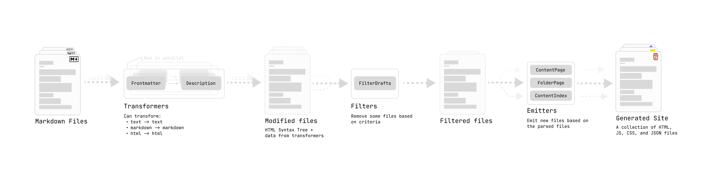

Warning
This part of the documentation will assume you have working knowledge in TypeScript and will include code snippets that describe the interface of what Quartz plugins should look like.
Quartz’s plugins are a series of transformations over content. This is illustrated in the diagram of the processing pipeline below:

All plugins are defined as a function that takes in a single parameter for options
type OptionType = object | undefined and return an object that corresponds to the type of plugin it
is.
type OptionType = object | undefined
type QuartzPlugin<Options extends OptionType = undefined> = (opts?: Options) => QuartzPluginInstance
type QuartzPluginInstance =
| QuartzTransformerPluginInstance
| QuartzFilterPluginInstance
| QuartzEmitterPluginInstanceThe following sections will go into detail for what methods can be implemented for each plugin type. Before we do that, let’s clarify a few more ambiguous types:
BuildCtxis defined inquartz/ctx.ts. It consists ofargv: The command line arguments passed to the Quartz build commandcfg: The full Quartz configurationallSlugs: a list of all the valid content slugs (see paths for more information on what aServerSlugis)
StaticResourcesis defined inquartz/resources.tsx. It consists ofcss: a list of URLs for stylesheets that should be loadedjs: a list of scripts that should be loaded. A script is described with theJSResourcetype which is also defined inquartz/resources.tsx. It allows you to define a load time (either before or after the DOM has been loaded), whether it should be a module, and either the source URL or the inline content of the script.
Transformers
Transformers map over content, taking a Markdown file and outputting modified content or adding metadata to the file itself.
export type QuartzTransformerPluginInstance = {
name: string
textTransform?: (ctx: BuildCtx, src: string | Buffer) => string | Buffer
markdownPlugins?: (ctx: BuildCtx) => PluggableList
htmlPlugins?: (ctx: BuildCtx) => PluggableList
externalResources?: (ctx: BuildCtx) => Partial<StaticResources>
}All transformer plugins must define at least a name field to register the plugin and a few
optional functions that allow you to hook into various parts of transforming a single Markdown file.
textTransformperforms a text-to-text transformation before a file is parsed into the Markdown AST.markdownPluginsdefines a list of remark plugins.remarkis a tool that transforms Markdown to Markdown in a structured way.htmlPluginsdefines a list of rehype plugins. Similar to howremarkworks,rehypeis a tool that transforms HTML to HTML in a structured way.externalResourcesdefines any external resources the plugin may need to load on the client-side for it to work properly.
Normally for both remark and rehype, you can find existing plugins that you can use
to . If you’d like to create your own remark or rehype plugin, checkout the guide to creating a plugin
using unified (the underlying AST parser and transformer library).
A good example of a transformer plugin that borrows from the remark and rehype
ecosystems is the Latex plugin:
import remarkMath from "remark-math"
import rehypeKatex from "rehype-katex"
import rehypeMathjax from "rehype-mathjax/svg.js"
import { QuartzTransformerPlugin } from "../types"
interface Options {
renderEngine: "katex" | "mathjax"
}
export const Latex: QuartzTransformerPlugin<Options> = (opts?: Options) => {
const engine = opts?.renderEngine ?? "katex"
return {
name: "Latex",
markdownPlugins() {
return [remarkMath]
},
htmlPlugins() {
if (engine === "katex") {
// if you need to pass options into a plugin, you
// can use a tuple of [plugin, options]
return [[rehypeKatex, { output: "html" }]]
} else {
return [rehypeMathjax]
}
},
externalResources() {
if (engine === "katex") {
return {
css: ["https://cdn.jsdelivr.net/npm/katex@0.16.0/dist/katex.min.css"],
js: [
{
src: "https://cdn.jsdelivr.net/npm/katex@0.16.7/dist/contrib/copy-tex.min.js",
loadTime: "afterDOMReady",
contentType: "external",
},
],
}
} else {
return {}
}
},
}
}Another common thing that transformer plugins will do is parse a file and add extra data for that file:
export const AddWordCount: QuartzTransformerPlugin = () => {
return {
name: "AddWordCount",
markdownPlugins() {
return [
() => {
return (tree, file) => {
// tree is an `mdast` root element
// file is a `vfile`
const text = file.value
const words = text.split(" ").length
file.data.wordcount = words
}
},
]
},
}
}
// tell typescript about our custom data fields we are adding
// other plugins will then also be aware of this data field
declare module "vfile" {
interface DataMap {
wordcount: number
}
}Finally, you can also perform transformations over Markdown or HTML ASTs using the visit function
from the unist-util-visit package or the findAndReplace function from the
mdast-util-find-and-replace package.
export const TextTransforms: QuartzTransformerPlugin = () => {
return {
name: "TextTransforms",
markdownPlugins() {
return [() => {
return (tree, file) => {
// replace _text_ with the italics version
findAndReplace(tree, /_(.+)_/, (_value: string, ...capture: string[]) => {
// inner is the text inside of the () of the regex
const [inner] = capture
// return an mdast node
// https://github.com/syntax-tree/mdast
return {
type: "emphasis",
children: [{ type: 'text', value: inner }]
}
})
// remove all links (replace with just the link content)
// match by 'type' field on an mdast node
// https://github.com/syntax-tree/mdast#link in this example
visit(tree, "link", (link: Link) => {
return {
type: "paragraph"
children: [{ type: 'text', value: link.title }]
}
})
}
}]
}
}
}All transformer plugins can be found under quartz/plugins/transformers. If you decide to write
your own transformer plugin, don’t forget to re-export it under
quartz/plugins/transformers/index.ts
A parting word: transformer plugins are quite complex so don’t worry if you don’t get them right away. Take a look at the built in transformers and see how they operate over content to get a better sense for how to accomplish what you are trying to do.
Filters
Filters filter content, taking the output of all the transformers and determining what files to actually keep and what to discard.
export type QuartzFilterPlugin<Options extends OptionType = undefined> = (
opts?: Options,
) => QuartzFilterPluginInstance
export type QuartzFilterPluginInstance = {
name: string
shouldPublish(ctx: BuildCtx, content: ProcessedContent): boolean
}A filter plugin must define a name field and a shouldPublish function that takes in a
piece of content that has been processed by all the transformers and returns a true or
false depending on whether it should be passed to the emitter plugins or not.
For example, here is the built-in plugin for removing drafts:
import { QuartzFilterPlugin } from "../types"
export const RemoveDrafts: QuartzFilterPlugin<{}> = () => ({
name: "RemoveDrafts",
shouldPublish(_ctx, [_tree, vfile]) {
// uses frontmatter parsed from transformers
const draftFlag: boolean = vfile.data?.frontmatter?.draft ?? false
return !draftFlag
},
})Emitters
Emitters reduce over content, taking in a list of all the transformed and filtered content and creating output files.
export type QuartzEmitterPlugin<Options extends OptionType = undefined> = (
opts?: Options,
) => QuartzEmitterPluginInstance
export type QuartzEmitterPluginInstance = {
name: string
emit(
ctx: BuildCtx,
content: ProcessedContent[],
resources: StaticResources,
emitCallback: EmitCallback,
): Promise<FilePath[]>
getQuartzComponents(ctx: BuildCtx): QuartzComponent[]
}An emitter plugin must define a name field an emit function and a
getQuartzComponents function. emit is responsible for looking at all the parsed and
filtered content and then appropriately creating files and returning a list of paths to files the plugin
created.
Creating new files can be done via regular Node fs
module (i.e. fs.cp or fs.writeFile) or via the emitCallback if you
are creating files that contain text. The emitCallback function is the 4th argument of the emit
function. It’s interface looks something like this:
export type EmitCallback = (data: {
// the name of the file to emit (not including the file extension)
slug: ServerSlug
// the file extension
ext: `.${string}` | ""
// the file content to add
content: string
}) => Promise<FilePath>This is a thin wrapper around writing to the appropriate output folder and ensuring that intermediate
directories exist. If you choose to use the native Node fs APIs, ensure you emit to the
argv.output folder as well.
If you are creating an emitter plugin that needs to render components, there are three more things to be aware of:
- Your component should use
getQuartzComponentsto declare a list ofQuartzComponentsthat it uses to construct the page. See the page on creating components for more information. - You can use the
renderPagefunction defined inquartz/components/renderPage.tsxto render Quartz components into HTML. - If you need to render an HTML AST to JSX, you can use the
toJsxRuntimefunction fromhast-util-to-jsx-runtimelibrary. An example of this can be found inquartz/components/pages/Content.tsx.
For example, the following is a simplified version of the content page plugin that renders every single page.
export const ContentPage: QuartzEmitterPlugin = () => {
// construct the layout
const layout: FullPageLayout = {
...sharedPageComponents,
...defaultContentPageLayout,
pageBody: Content(),
}
const { head, header, beforeBody, pageBody, left, right, footer } = layout
return {
name: "ContentPage",
getQuartzComponents() {
return [head, ...header, ...beforeBody, pageBody, ...left, ...right, footer]
},
async emit(ctx, content, resources, emit): Promise<FilePath[]> {
const cfg = ctx.cfg.configuration
const fps: FilePath[] = []
const allFiles = content.map((c) => c[1].data)
for (const [tree, file] of content) {
const slug = canonicalizeServer(file.data.slug!)
const externalResources = pageResources(slug, resources)
const componentData: QuartzComponentProps = {
fileData: file.data,
externalResources,
cfg,
children: [],
tree,
allFiles,
}
const content = renderPage(slug, componentData, opts, externalResources)
const fp = await emit({
content,
slug: file.data.slug!,
ext: ".html",
})
fps.push(fp)
}
return fps
},
}
}Note that it takes in a FullPageLayout as the options. It’s made by combining a
SharedLayout and a PageLayout both of which are provided through the
quartz.layout.ts file.
Tip
Look in
quartz/pluginsfor more examples of plugins in Quartz as reference for your own plugins!